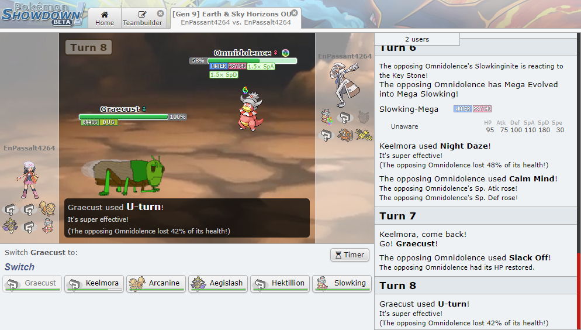
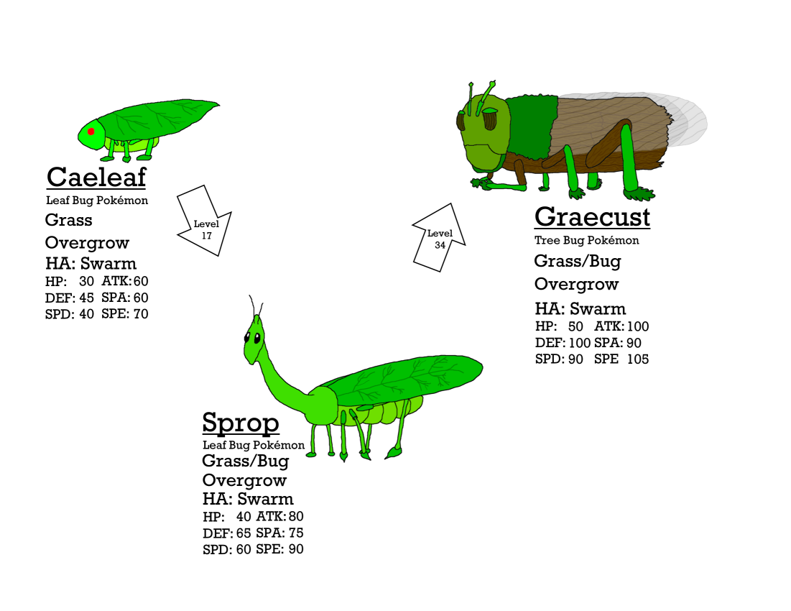

One of my longest-running projects is design and documentation for a hypothetical set of Pokémon games, if I were to design them. The document includes a new region based on Greece, over 100 new Pokémon and forms (with fully-defined stats, movepools, PokéDex entries, the whole nine yards), a filled dex of other included Pokémon in the region, and much more.
Battles with these additions and the many, many changes made to existing content are playable, having been fully coded by me in TypeScript to the largest Pokémon battle simulator, Pokémon Showdown!. Teams can be built and battled with on the Dragon Heaven server, though I recommend having a strong familiarity with the Pokémon battle system to be able to understand what's going on.
Along with the raw spreadsheets, I am working on a website that presents many of the additions and changes with more detail, including commentary from myself on the design process and the reasoning behind my decisions. Both are linked below.
The reason I am showing it on my portfolio is to show off my design skills, thought processes, and my passion and dedication to projects I enjoy. Putting the rest of the project into production, either on my own using one of the many Pokémon-game-making-kits out there, or in some distant future somehow proposing it to the Pokémon Company, will probably never happen. This is a AAA series we're talking about, after all.